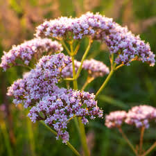
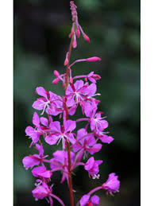
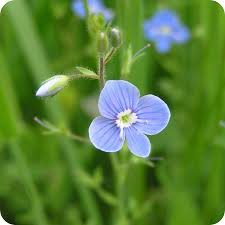

Valerian
Valerian has been used medicinally since the times of early Greece and Rome. Today, valerian is promoted for insomnia, anxiety, depression, premenstrual syndrome (PMS), menopause symptoms, and headaches. Moreover, valerian root appears to be a healthier alternative for achieving healthy sleep, especially when compared to the artificial introduction of hormones like melatonin into the body. It works by supporting the body's natural processes rather than disrupting them, which is essential for long-term sleep health. There have also been cases reported in the literature that suggest Valeriana officinalis can cause liver injury, as well as a number of cases reported to regulators in other countries. Based on the evidence to date, it appears that liver injury associated with Valeriana officinalis is very rare. Valerian may not be safe if you're pregnant or breast-feeding. And it has not been evaluated to determine if it's safe for children under 3 years old. The primary active compounds in valerian root include valepotriates, volatile oils (such as valerenic acid), and flavonoids. These compounds are believed to interact with neurotransmitters in the brain to reduce feelings of stress and anxiety.
Harvesting. Dig roots in fall or early spring and dry outdoors, because they release an unpleasant smell as they dry. Store in airtight container. Dried valerian roots are used to make a bedtime tea that promotes sleep. The roots and rhizomes (underground stems) of valerian are used for medicinal purposes.
feverfew
Feverfew is used mostly to treat and prevent headaches. Feverfew was popular in the 1980s as a treatment for migraines. A survey of 270 people with migraines in Great Britain found that more than 70% of them felt much better after taking an average of 2 to 3 fresh feverfew leaves daily. Feverfew is promoted for fevers, headaches, and arthritis; topically (applied to the skin), it's promoted for toothache and as an antiseptic and insecticide. Feverfew has been called “medieval aspirin” or “aspirin of the 18th century.” Some people have other side effects if they stop taking feverfew suddenly after long-term use. These include: Trouble sleeping. Closely related to chamomile, the chief difference is that feverfew is more erect and its leaves are used herbally; chamomile is more prostrate in its growth and the flowers are employed herbally. One reference suggests not planting feverfew among plants needing pollination, as bees avoid it for the smell of it.
Feverfew should be harvested in the second year by swathing the leaves and flowers while in full bloom (mid July). Leave four inches (10 cm) for regrowth to allow a second cut later in the season. Prior to cutting back feverfew, spray the plant down the evening before.
Fireweed
In traditional medicine it is used as a tea that improves metabolism, “cleanses” the skin, reduces headaches, soothes, against insomnia, against various inflammations of the gastrointestinal tract, pain, fevers, tumors, wounds, and enlarged prostate (benign prostatic hyperplasia, BPH)ear-nose-throat inflammation. The parts of the plant that grow above ground are used to make medicine. The shoots and young leaves of the fireweed plant can be eaten raw, in salads, pickled, sautéed or steamed as you would asparagus. Leaves and unopened buds also can be picked and used before the blossoms develop. The young, slender leaves and immature buds can be mixed with salad greens. Unlike every other herbal tea, fireweed tea does not just consist of dried leaves in hot water; the leaves are fermented, just like those in black tea. The result is a tea that tastes very much like black tea, only with no caffeine.
Harvest them as soon as they open. They contain sweet nectar that make a delicious cup of tea. They can also be dried for later use. Harvest the shoots in early spring (may) when they are just 6 to 12 inches high and plant as a potherb.
Veronica officialis (speedwell)
Although speedwell has a reputation, especially in Europe, as a healer of all illnesses, it is used primarily as an expectorant for respiratory problems. It has also been used for stomach ailments, migraine headache, and as a gargle for mouth and throat soars, the fresh juice taken in large quantities is helpful for gout, and it can also be used externally to relieve chronic skin problems. Among the Welsh peasantry, great virtues are attributed to the Speedwell. The plant has diaphoretic, alterative, diuretic, expectorant and tonic properties, and was formerly employed in pectoral and nephritic complaints, haemorrhages, diseases of the skin and in the treatment of wounds. Mix around 25 g each of speedwell, plantain and coltsfoot leaves together. For each cup, pour water over 1 teaspoon of the herb mixture and leave to infuse for eight minutes. Then sieve and drink at a lukewarm temperature without sugar.